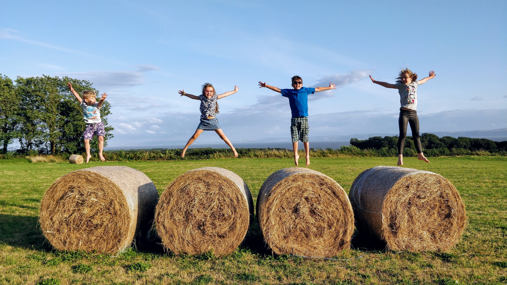

Cambridge Primary curriculum provides a clear framework, teaching structure and objectives in maths, English, and science, with integrated assessments alongside teacher assessments to monitor learners’ progress.
At the end of Primary, students take the Checkpoint exam.

Cambridge Primary English enables learners to communicate confidently and effectively, as well as understand and enjoy a range of information and texts. It develops learners’ critical thinking skills as well as reading, writing, speaking and listening skills in English.
Five content areas are explored in Cambridge Primary maths: numbers, geometry, handling data, measure, and problem solving. There is a focus on principles, patterns, systems, functions, and relationships so that learners can apply their mathematical knowledge in a holistic way.
Four content areas are explored in Cambridge Primary science: scientific enquiry, biology, chemistry and physics. Students have to consider ideas, evaluate evidence, plan, investigate, record, and analyse data, as well as consider some history of science and environmental awareness.
Cambridge ICT Starters programme for Primary is also implemented in all Primary grades. This introduces and builds on vital ICT skills that prepares students for the 21st century society.
This programme develops the skills of research, analysis, evaluation, reflection, collaboration and communication. These skills build a solid foundation for student learning, creating students who know how to learn, not simply knowledge. It strengthens the links across English as a first or second language, mathematics, science and ICT Starters.
As well as the Cambridge curriculum, students in both preschool and primary are encouraged and enabled through their learning to be creative, critical thinkers with an awareness about their developing world, and the changing environment and society. This holistic approach is centered around maths, science and English skills but is supplemented through ICT, languages, art, music, physical education, and Global Perspectives to enrich the curriculum and develop inquiring and curious minds.

Some quick example text to build on the card title and make up the bulk of the card's content. Some quick example text to build on the card title.

Some quick example text to build on the card title and make up the bulk of the card's content. Some quick example text to build on the card title.

Some quick example text to build on the card title and make up the bulk of the card's content. Some quick example text to build on the card title.